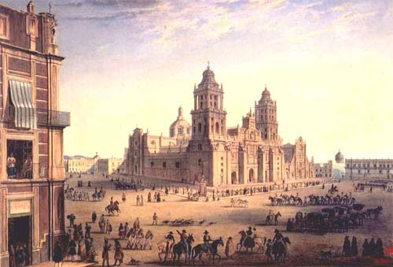

CIUDAD DE MÉXICO
La Ciudad de México (CDMX), anteriormente denominada Distrito Federal (D. F.),nota es la capital de México. Es una de las entidades federativas que, junto con treinta y un estados, conforman dicho país. Asimismo es sede de los Poderes de la Unión. Está dividida en dieciséis demarcaciones territoriales.
Se localiza en el Valle de México en la región centrosur del país; colinda al norte, oeste y este con Estado de México y al sur con Morelos. Con 1495 km², representa el 0.1 % del territorio nacional, siendo la entidad más pequeña del país.
Su población es 99 % urbana y en 2020 se población se censó en 9 209 944 habitantes, que representa el 7.3 % del total del país, lo que la posiciona como la segunda entidad federativa más poblada por detrás del Estado de México. No obstante, si se considera la totalidad de la zona metropolitana del Valle de México como su mayor urbe, suma 21 804 515 habitantes, lo que la coloca como la aglomeración urbana más grande del mundo hispanohablante y de América, y la octava aglomeración más grande y poblada del mundo. En 2019, su índice de desarrollo humano era de 0.837 (clasificado muy alto), primera entidad del país por IDH.
Es el núcleo urbano más grande de México y su principal centro político, económico, social, académico, financiero, empresarial, turístico, cultural, de comunicaciones y de entretenimiento. En 2018, tuvo un PIB nominal de 568 445 000 000 (quinientos sesenta y ocho mil cuatrocientos cuarenta y cinco millones) de dólares. Catalogada como una ciudad global, también es uno de los centros financieros y culturales más importantes del mundo, con una de las economías más dinámicas a nivel internacional, y es, por el tamaño de su PIB, la número quince a nivel mundial. En el 2018, representó el 17 % del total del PIB nacional, con un crecimiento medio en ese año de 6.8 % (por encima de la media nacional), y una aportación del 27 % al crecimiento económico del país en ese año.
Ha sido el escenario de varios de los acontecimientos históricos y mediáticos más importantes de dicha nación. No hay consenso científico sobre la fecha de la fundación de la ciudad, pero pudo ocurrir a inicios del siglo XIV. Correlaciones hechas en el periodo de la Nueva España sugieren que la fundación fue llevada a cabo por los mexicas el 13 de marzo de 1325, en una isla del lago de Texcoco, con el nombre de Cuauhmixtitlan y renombrada México-Tenochtitlan por Acamapichtli en 1376 como homenaje al caudillo Ténoch. Ese núcleo urbano se convirtió, con el tiempo, en la capital del Imperio mexica. El 13 de agosto de 1521, los mexicas fueron derrotados con la toma de la ciudad, a manos de los españoles y sus aliados indígenas al mando del conquistador español Hernán Cortés, acontecimiento que marcó el inicio de la época virreinal.
En 1535, se creó oficialmente el Virreinato de la Nueva España y se estableció la nueva Ciudad de México encima de la antigua México-Tenochtitlan, reconocida por una cédula real, de 1545, como Muy Noble, Insigne, Muy Leal e Imperial Ciudad de México por Carlos I de España. En ese momento, fue declarada capital del virreinato, y funcionó a partir de entonces como centro político, financiero y administrativo de los territorios del Imperio español en Norteamérica, Centroamérica, Asia y Oceanía. El dominio español de esa época sobre la ciudad capital llegó a su fin cuando concluyó la guerra de independencia en 1821, con la entrada del Ejército Trigarante a la ciudad. El estatus de sede de gobierno fue ratificado en el Acta de Independencia del Imperio Mexicano, que la nombraba Capital del Imperio.
En 1823, con la proclamación de la Primera República Federal, terminó de manera oficial el Primer Imperio mexicano (1821-1823), y el 18 de noviembre de 1824 el Congreso decidió crear un Distrito Federal (es decir, una entidad distinta a los demás estados) para albergar los poderes Ejecutivo, Legislativo y Judicial en un territorio que no perteneciese a ningún estado en particular, a fin de evitar la hegemonía de un estado sobre los demás de la federación. Gracias a fray Servando Teresa de Mier y a algunas otras personas que apoyaron su causa, Ciudad de México fue elegida como el lugar donde se concentrasen los poderes de la unión.
En 1929, se extinguieron las libertades municipales del Distrito Federal. Las progresivas modificaciones al estatus de la ciudad comenzaron en 1988 con la conformación de un órgano legislativo de elección popular (la Asamblea de Representantes del Distrito Federal); continuaron en 1997 con la elección de un poder ejecutivo propio (jefe de Gobierno del D. F.); y concluyeron en 2016 con la reforma política que redactó su propia constitución política (entró en vigor plenamente en 2018); este proceso político también concluyó otorgándole en la carta magna federal los mismos derechos y facultades de cualquier estado, pero que, considerando su categoría de capital de la república, conserva la denominación de entidad federativa; también se dejan de emplear los nombres México D. F. y Distrito Federal para usar únicamente el término Ciudad de México.
En su territorio se encuentra tres bienes culturales de los treinta y cinco sitios Patrimonio de la Humanidad con los que cuenta el país: el Centro Histórico, Xochimilco (conformada por su centro histórico y tres zonas chinamperas), el Campus Central de la Ciudad Universitaria de la UNAM y la Casa y estudio de Luis Barragán. Cuenta con ciento cincuenta y un museos que la pone como la segunda ciudad con más museos en el mundo solo por detrás de Londres. Además, en 1968, fue la primera ciudad de Latinoamérica y de habla hispana en albergar una cita olímpica al ser sede de los Juegos Olímpicos de México 1968.
TOPONIMIA
Toma su nombre de la voz México que se encontraba en el nombre de la capital del Imperio mexica: México-Tenochtitlan. La Ciudad de México originó el nombre que a su vez designa el nombre del país (México) y de un estado dentro del país (Estado de México).
Su gentilicio más usado es «capitalino», que designa genéricamente a cualquier oriundo de una capital. Chilango es un gentilicio informal cuya etimología hoy es incierta pero se sabe que tenía orígenes despectivos, sin embargo, hoy en día es poco frecuente que se considere así e inclusive capitalinos se sienten identificados con dicho gentilicio como una vez lo declaró el Jefe de Gobierno del Distrito Federal Miguel Ángel Mancera. «Defeño» fue un gentilicio que se originó de cuando era llamada el Distrito Federal (D. F.), ya que era producto del deletreo de su abreviación: de y efe, y del sufijo -eño;47 su uso se mermó cuando se cambió de nombre en 2016. Por lo que su uso hoy en día es obsoleto.
Debido a que la raíz de México ya es utilizada como expresión de origen para todo el país de México (mexicano) y del Estado de México (mexiquense —oficializado en 1985—), la Real Academia Española en 2001 creó uno nuevo: mexiqueño; sin embargo, es prácticamente desconocido entre la población en general y no es utilizado en ninguna instancia oficial.

HISTORIA
ÉPOCA PREHISPÁNICA
Los indicios más antiguos de ocupación humana en el territorio de Ciudad de México son los de la «Mujer del Peñón» y otros encontrados en San Bartolo Atepehuacan (Gustavo A. Madero), y se creía que correspondían al período Cenolítico Inferior (9500-7000 a. C.). Sin embargo, recientes estudios ubican su antigüedad en 12 700 años, y su origen, por su ADN mitocondrial, como asiático.
Durante los primeros tres milenios antes de nuestra era, bajo el influjo o a la sombra de la cultura olmeca, se desarrollaron aquí varias poblaciones importantes como Cuicuilco. Hacia el final del Preclásico, la hegemonía cuicuilca cedía ante el apogeo de Teotihuacán, localizada al noreste del lago de Texcoco. Durante el Clásico esa ciudad fue un núcleo que concentró a la mayor parte de los pobladores de la cuenca lacustre, quedando Azcapotzalco como uno de sus satélites en la ribera poniente, ocupado por pueblos de ascendencia otomí. En el oriente del lago, el cerro de la Estrella fue la sede de un pequeño pueblo teotihuacano.
Hacia el siglo VIII comenzó la decadencia de Teotihuacán. Algunos de sus habitantes se trasladaron a la ribera del lago de Texcoco, donde fundaron pueblos como Culhuacán, Coyoacán y Copilco. La zona fue destino de las migraciones de los teochichimecas durante los siglos VIII y XIII, pueblos que originarían a las culturas tolteca y mexica. Estos últimos llegaron hacia el siglo XIV para establecerse primero en las orillas del lago.
Debido a su origen mitológico, no hay consenso científico sobre la fecha de la fundación de la ciudad de México-Tenochtitlan pero pudo ocurrir a inicios del siglo XIV. Fuentes del siglo XVI que hicieron correlaciones de los antiguos calendarios con los occidentales la situaron en 1325 —2 casa en la cuenta calendárica mexica— o en 1345, en un islote al centro de la zona lacustre. Algunos años más tarde una fracción de los mexicas que migraban desde el norte del país habrían fundado la ciudad de México-Tlatelolco en otro islote al noroeste. Más tarde, en 1428 Tenochtitlan, Tetzcoco y Tlacopan establecieron la Triple Alianza la cual fue dominada por los mexicas que crearon un imperio en un territorio de cerca de 300 000 kilómetros cuadrados. Como parte de esta expansión, Tenochtitlan conquistó a la otra ciudad de origen mexica de Tlatelolco en 1473, que dada su cercanía, se unieron en una sola zona urbana. Al momento de la llegada de los españoles, México-Tenochtitlan era una de las urbes más grandes del mundo antiguo contando, basado en estimaciones modernas, con un estimado de 300 000 personas.
CONQUISTA
Los españoles llegaron al territorio que actualmente es Ciudad de México por Iztapalapan, en julio de 1519. Siguieron su camino por la calzada de Iztapalapan hasta la capital tenochca donde Hernán Cortés fue recibido por Moctezuma Xocoyotzin el 8 de noviembre de 1519. En 1520, Pedro de Alvarado (en ausencia de Cortés) arremetió contra los mexicas en la Matanza de Tóxcatl. Este hecho fue el punto por el que los mexicas iniciaron hostilidades contra los invasores europeos.
Durante la conquista Hernán Cortés tuvo como ayudante y traductora a Malintzin, conocida como La Malinche, quien le ayudó a comunicarse con los aztecas.
En sustitución de Moctezuma quien fue linchado por su pueblo tras ser obligado por los españoles a convencerlos de cesar las hostilidades, Cuitláhuac fue elegido tlatoani de México-Tenochtitlan, encabezando la resistencia contra la ocupación española, derrotó a los invasores y sus aliados indígenas el 30 de junio de 1520 en el episodio conocido como «La Noche Triste». Por aquella época también tuvo lugar una desastrosa epidemia de viruela, que cobró miles de vidas, entre ellas la del propio Cuitláhuac. Como sustituto de Cuitláhuac fue elegido Cuauhtémoc, quien enfrentó el asedio de los españoles aliados con los indígenas del valle de Puebla-Tlaxcala.
Cuauhtémoc se rindió luego de múltiples derrotas de los mexicas y tlatelolcas a manos de la epidemia de viruela y el hambre, el 13 de agosto de 1521 al ser capturado en Tlatelolco.
ÉPOCA VIRREINAL
En 1521, Cortés decidió establecer en la antigua Tenochtitlan la capital de la Nueva España, por lo que ordenó su reconstrucción ya que había sido destruida durante la guerra de conquista. Entretanto se reconstruía, estableció el gobierno español en la población de Coyoacán, al sur del lago de Texcoco. Desde allí gobernó provisionalmente con el título de Capitán General que le ratificó el emperador Carlos V. Desde esta población de Coyoacán partieron las expediciones de conquista de lo que había sido el imperio mexica, con el propósito de someter a los pueblos indígenas de los diversos rumbos de lo que sería el reino de la Nueva España. En 1528, fue establecida la Primera Audiencia de México, encabezada por Nuño de Guzmán y, en 1535, se estableció el virreinato de la Nueva España, siendo su primer virrey, Antonio de Mendoza, quien continuó con la expansión territorial de la conquista española.
Los pueblos situados alrededor del lago (como Tacuba o Xochimilco) fueron frecuentemente entregados en encomiendas en el siglo XVI, pero paulatinamente pasaron a depender solo de los oficiales del rey. La ciudad de México se dividió en barrios (que se asentaron sobre las estructuras territoriales de los calpultin mexicas). Estos barrios de indios estaban situados originalmente en la periferia, aunque con el crecimiento urbano y la migración por razones de trabajo, los límites fueron cada vez menos claros, y los indios llegaron a vivir en el centro de la ciudad. Al mismo tiempo tuvo lugar un proceso de asimilación cultural y educación de los naturales, en escuelas situadas en conventos y parroquias. Hubo una intensa campaña de educación de los indios, encabezada primero por los franciscanos, quienes además de la doctrina enseñaban artes y oficios. Los franciscanos también establecieron el Colegio de la Santa Cruz de Tlatelolco para los hijos de la nobleza indígena, donde entre otros conocimientos avanzados, los alumnos aprendían el latín. A fines del siglo XVI este Colegio entró en decadencia.
Durante el virreinato, Ciudad de México se llenó de suntuosas construcciones, ya fuera para el culto religioso, como edificios destinados a la administración, o bien, residencias de la élite, rodeada de barrios de clases humildes. La idea de las dos repúblicas —de indios y españoles—, fue desbordada por la realidad de una población mestizada, donde las categorías de español o indio no dependían únicamente del origen étnico. De ahí que no podamos hablar de la existencia de una «ciudad de españoles» rica, frente a una «ciudad de indios» pobre. Así, a finales del siglo XVIII, en las calles más céntricas de la ciudad:
«Ya que no disponemos de censos de esas fechas, podemos recurrir a otros documentos y así vemos las tendencias apreciables en los registros parroquiales del Sagrario, la Santa Veracruz y Santa Catarina, que señalan una clara mayoría de 56 % a 58 % de indios y castas (y de ellos eran más numerosos los primeros) sobre 44 % y 42 % de españoles. Y aún más expresivo es el hecho de que un siglo después la proporción se invirtiese para alcanzar 60 % de españoles en las calles más céntricas de la capital. Sabemos que no se puede pensar en una inmigración masiva de la península ibérica ni en una fecundidad exuberante de las mujeres españolas. El hecho, que los documentos respaldan, es que los párrocos no prestaban atención a las diferencias étnicas y que la flexibilidad en la consideración social permitía que se considerasen como españoles quienes apenas tuvieran algún remoto antepasado procedente de los reinos de Castilla.»
Pilar Gonzalbo Aizpuru
La ciudad virreinal fue víctima de varias inundaciones (1555, 1580, 1607, 1629, 1707, 1714, 1806). Este hecho llevó a tomar la decisión de desecar la cuenca lacustre del Valle de México, por medio de la construcción de un canal de desagüe y un tajo, para drenar y dar salida a las aguas por el río Tula.

INDEPENDENCIA
Tras la ocupación francesa en la Península, el Ayuntamiento de México se declaró simpatizante de la creación de una Junta soberana que gobernara la Nueva España mientras durara la ocupación. Los miembros más radicales, como Francisco Primo de Verdad y Melchor de Talamantes, pensaban que la independencia debía ser definitiva. La Junta de México contaba con el apoyo del virrey José de Iturrigaray. Sin embargo, un movimiento reaccionario puso presos a los miembros del ayuntamiento en 1808 y consiguió la destitución del virrey.
Tras el inicio de la revolución independentista en Dolores, Guanajuato, el objetivo de las tropas insurgentes era la captura de la capital. Sus caminos los llevaron a las inmediaciones de Ciudad de México. Hidalgo y su ejército llegaron a San Pedro Cuajimalpa poco tiempo después de proclamar la independencia en Dolores. Derrotaron a los realistas en la batalla del Monte de las Cruces, y a pesar de ello, los insurgentes decidieron volver al Bajío sin tomar la capital.
A partir de entonces, el valle de México no volvió a ser objetivo militar de los independentistas, y se había convertido en la plaza fuerte del ejército realista. Hacia 1820, cuando la revolución popular estaba casi extinguida, Ciudad de México fue la sede de nuevos movimientos contra el gobierno virreinal. Esta vez, los conspiradores eran los mismos que habían logrado la destitución de Iturrigaray, que tras la aprobación de la Constitución de Cádiz vieron amenazados sus privilegios. Entre ellos estaba Agustín de Iturbide, quien selló un pacto (Plan de Iguala) con Vicente Guerrero (jefe de la revolución en el sur de México) y luego obligó a Juan O'Donojú a firmar los Tratados de Córdoba que declaran la independencia de México. El Ejército Trigarante entró triunfante a Ciudad de México el 27 de septiembre de 1821, después Agustín de Iturbide es proclamado emperador del Primer Imperio Mexicano, por el congreso, coronándose en la Catedral de México.
SIGLO XIX
Tras la independencia, Ciudad de México era capital del estado del mismo nombre. El 18 de noviembre de 1824 el Congreso decidió crear un distrito federal, entidad que albergaría los poderes federales. El territorio del Distrito Federal se conformó con Ciudad de México y otros seis municipios: Tacuba, Tacubaya, Azcapotzalco y Mixcoac, el 20 de febrero de 1837.
En esta época se vivió un período de luchas internas, dos invasiones extranjeras (la francesa y la norteamericana) y una guerra civil que terminó con el triunfo de los liberales y el gobierno de Benito Juárez.
Durante su régimen se implantaron Las Leyes de Reforma, las cuales planteaban un examen de las bases históricas y filosóficas de la sociedad mexicana. Negaban tanto el pasado indígena como el catolicismo europeo al promover la disolución de las asociaciones religiosas y la propiedad comunal indígena; proponían la separación de la Iglesia y el Estado; la desamortización de los bienes eclesiásticos y la libertad de enseñanza (disolviendo las órdenes religiosas que las monopolizaban).
Durante el siglo XIX, el Distrito Federal fue el escenario central de todas las disputas políticas del país. Fue capital imperial en dos ocasiones (1821-1823 y 1864-1867), y de dos Estados federalistas y dos Estados centralistas que se sucedieron tras innumerables golpes de Estado en el espacio de medio siglo antes del triunfo de los liberales tras la Guerra de Reforma. También fue el objetivo de una de las dos invasiones francesas a México (1861-1867), y ocupada por un año por las tropas estadounidenses en el marco de la Guerra de Intervención estadounidense (1847-1848).
Hacia finales del siglo XIX, en el marco del Porfiriato, el gobierno de México decide realizar numerosas obras urbanísticas que si bien tenían como centro de atención Ciudad de México, terminarían por afectar a todo el territorio del Distrito Federal. Entre ellas se encuentra la construcción del Gran Canal del Desagüe, iniciado hacia 1878 y terminado en 1910. Está obra puso casi al borde de la extinción a los lagos que cubrían buena parte del territorio capitalino. Se introdujeron barcos de vapor para el transporte a través de los canales del valle, y tranvías para el transporte terrestre.
En 1910, comienza la Revolución mexicana triunfando en su primera etapa Francisco I. Madero y exiliando al presidente Porfirio Díaz, durante el breve periodo presidencial de Madero se sucede en la ciudad el hecho conocido como la «Decena Trágica» que fue un periodo de 10 días de combates que sacudieron a la ciudad en febrero de 1913, cuando un grupo de rebeldes encabezados por Bernardo Reyes, Félix Díaz y Manuel Mondragón —y parte del ejército mexicano— derrocaron y asesinaron al presidente Madero.

SIGLO XX
La Revolución mexicana dio fin a la larga presidencia de Porfirio Díaz y marcó el inicio del siglo XX mexicano. Durante la guerra, el Distrito Federal fue ocupado sucesivamente por los maderistas, los zapatistas y villistas y finalmente los carrancistas. Esta última facción sería sustituida por el llamado Grupo Sonora, que a su vez daría lugar al Partido Revolucionario Institucional (y sus antecedentes) que dominó el gobierno de México desde 1929 hasta el año 2000.
Motivado por conflictos políticos con sus adversarios y argumentando un mejor control de la administración, el entonces candidato a la presidencia Álvaro Obregón envió el 18 de abril de 1928 a la Comisión Permanente del Congreso de la Unión una iniciativa de ley de reforma al artículo 73 de la Constitución. En ella propuso suprimir el régimen municipal en el Distrito Federal, con lo que las trece municipalidades existentes en su territorio desaparecieron y el gobierno pasó a mandato del presidente de la república, el cual administraría el territorio con un Departamento Central, y designaría a discreción el o la regente, el o la procuradora de justicia así como la intervención en la designación de los futuros delegados. La reforma fue aprobada por mayoría, con 185 votos a favor y 21 en contra de la fracción del Partido Laborista Mexicano, liderada por Vicente Lombardo Toledano. Dicho instituto político tenía en la época gran parte del control político de las municipalidades del distrito, y uno de sus personajes relevantes, Luis N. Morones, buscaba como Obregón la presidencia. La nueva Ley Orgánica del Distrito y Territorios Federales que determinaba estas nuevas disposiciones fue publicada el 20 de agosto en el Diario Oficial de la Federación y entró en vigor el 31 de diciembre de 1928, sin que Obregón llegara a verla implementada ya que fue asesinado poco después de ganar la reelección, el 17 de julio.
Más tarde, en 1970, fue promulgada una ley que dividió la entidad en dieciséis delegaciones políticas cuyos pobladores estuvieron imposibilitados de elegir representantes y gobiernos locales hasta 1997.
Con el período de apogeo económico conocido como «milagro mexicano» (décadas de 1950 y 1960), Ciudad de México vivió una época de urbanización sin precedentes en el país. Su población se duplicaba en menos de veinte años, y fue absorbiendo poco a poco a los poblados cercanos, hasta desbordarse del territorio del D. F. Fueron inauguradas numerosas obras públicas en ese período. Entre ellas se puede citar a la Ciudad Universitaria cuyos planes de construcción se remontan a 1929, cuando dos estudiantes de arquitectura presentan como tesis, un proyecto de Ciudad Universitaria. La zona en la que proyectaron su plan fue en Huipulco, también al sur de la Ciudad. Pero es hasta 1945, cuando por decreto se formula y aprueba una ley «sobre la fundación y construcción de Ciudad Universitaria». Otra construcción emblemática es el Estadio Azteca.
También a partir de 1950, Ciudad de México fue el escenario de numerosas expresiones de inconformidad contra el gobierno priista. En la década de 1950 tuvo lugar la protesta de los ferrocarrileros, que terminó con el encarcelamiento de varios de sus líderes (como Demetrio Vallejo).
En 1968, los estudiantes de numerosas escuelas públicas y privadas también iniciaron una serie de protestas que concluyeron con la Matanza de Tlatelolco, el 2 de octubre, por el Ejército Mexicano. Tres años más tarde, el 10 de junio de 1971 una manifestación de estudiantes de la Escuela Normal Superior fueron atacados por el Gobierno, en lo que se conoce como Jueves de Corpus. El 19 de septiembre de 1985, Ciudad de México se vio gravemente dañada por un terremoto de 8,1 grados Richter. A partir de entonces, la sociedad civil capitalina comenzó a tomar cada vez más en sus manos el control de aquellos espacios que el Estado había dejado abandonados. Como resultado de lo anterior, en las controvertidas elecciones federales de 1988, el PRI fue derrotado ampliamente en el Distrito Federal por el FDN.
En la década de 1980 las peticiones de mayor representación política se incrementaron, por lo que en 1987 se realizó una reforma constitucional que creó la Asamblea de Representantes del Distrito Federal, que funcionó de 1988 a 1994. A partir de ese año otra reforma legal elevó el rango a Asamblea Legislativa del Distrito Federal y sus integrantes se convirtieron en legisladores.
Para 1997 el Distrito Federal eligió a su jefe de gobierno por primera vez en su historia. En esa ocasión el PRI perdió el control político de la ciudad a manos del Partido de la Revolución Democrática (PRD) y su candidato, Cuauhtémoc Cárdenas Solorzano. Desde entonces, este partido ha ganado las elecciones para jefe de Gobierno del Distrito Federal en cuatro ocasiones consecutivas (1997, 2000, 2006, 2012).

SIGLO XXI
Las últimas elecciones de la Ciudad de México (2018) tuvieron como resultado la victoria de Claudia Sheinbaum como jefe de Gobierno electo de la Ciudad de México, perteneciente a la coalición Juntos haremos historia de Morena, PT y Partido Encuentro Social, por el periodo comprendido de 2018 a 2024, obteniendo más del 47.05 % de votos, dejando detrás a sus oponentes, Mikel Arriola del PRI, Alejandra Barrales Magdaleno contendiente por la coalición Por México al Frente de los partidos PRD, PAN y el partido de Movimiento Ciudadano, Purificación Carpinteyro por Nueva Alianza, Marco Ignacio Rascón Córdoba del Partido Humanista, Mariana Boy Tamborriel por el PVEM y finalmente Lorena Osorio Eliozondo como candidata independiente.
La toma de posesión de Claudia Sheinbaum como jefe de Gobierno de la Ciudad de México tuvo lugar el 5 de diciembre de 2018, con lo cual concluyó el periodo de gobierno de Miguel Ángel Mancera.
En la etapa de los gobiernos anteriores, se aprobaron una ola de políticas liberales, convirtiéndose así en la primera entidad federativa de México en reconocer legalmente las uniones entre personas del mismo sexo. Esto ocurrió con la aprobación de la Ley de Sociedades de Convivencia en la Asamblea Legislativa Capitalina en 2006 y posteriormente con la aprobación del Matrimonio igualitario en 2009. En abril de 2007 también se convirtió en la primera entidad federativa en despenalizar el aborto antes de las 12 semanas de embarazo, ley que fue criticada en su tiempo por la Iglesia católica y por las organizaciones conservadoras.
REFORMA POLÍTICA DE LA CIUDAD DE MÉXICO
El 29 de enero de 2016, se promulgó y publicó el decreto de reforma constitucional por la que el Distrito Federal dejaba de existir para convertirse, a partir del día siguiente, en una entidad con plena autonomía dentro de la federación bajo el nombre de Ciudad de México; continuará conservando el carácter de capital de la República y seguirá albergando los poderes de la unión. Este cambio a ciudad-estado es similar a la existente organización territorial de las capitales de otros países, tales como Alemania o Austria.
Algunos de los cambios más relevantes de esta nueva designación son:
La Ciudad de México será la entidad (no estado) federal número 32 y se mantendrá como la capital del país.
Podrá contar con su propia constitución política, que deberá ser promulgada a más tardar el 31 de enero de 2017. Para ello necesitará una asamblea constituyente que será votada el primer domingo de junio de 2016 y se instalará el 15 de septiembre del mismo año.
Las delegaciones políticas desaparecerán y se crearán las demarcaciones territoriales, mismas que serán encabezadas por un alcalde y un cabildo integrado por 10 concejales elegidos democráticamente.
La Asamblea Legislativa dejará de existir para convertirse en un congreso local, mismo que podrá aprobar o rechazar reformas constitucionales. Anteriormente, la Asamblea Legislativa estaba excluida de votar los cambios a la Constitución Federal.
La Ciudad de México tendrá acceso a fondos federales para estados y municipios, se encargará de vigilar que se administren en las demarcaciones territoriales. De igual forma, tendrá plena autonomía en materia presupuestal y de endeudamiento.
A diferencia de los estados, el gobierno federal mantendrá la responsabilidad del financiamiento a la educación y servicios de salud de Ciudad de México.
El Ministerio Público de la Federación se organizará en una Fiscalía General de la República como órgano público y autónomo. Asimismo, el Tribunal Superior de Justicia del Distrito Federal se convertirá en el Poder Judicial de la Ciudad de México.
El procurador de justicia y el jefe de la Policía serán designados por el jefe de gobierno y ya no por el presidente de la República.
La Ciudad de México tendrá un Sistema Nacional de Información Estadística y Geográfica y sus datos serán considerados oficiales.
Los salarios no podrán ser inferiores al mínimo para los trabajadores del resto de las entidades federativas.
GEOGRAFÍA
RELIEVE
Según el Instituto Nacional de Estadística, Geografía e Informática (INEGI), el territorio de la Ciudad de México se localiza en la provincia geológica de lagos y volcanes del Anáhuac. El límite norte de Ciudad de México está dado por la sierra de Guadalupe del que forma parte el cerro del Tepeyac. Hacia el centro oriente de la ciudad se localiza la sierra de Santa Catarina, una cadena de volcanes apagados cuyo punto más alto es el volcán de Guadalupe o El Borrego, que se eleva a 2780 m s. n. m. (metros sobre el nivel del mar). En algunas descripciones de la geografía capitalina se suele incluir al cerro de la Estrella como parte de la sierra de Santa Catarina.
La planitud del valle de México, en el que se asienta la mayor parte de los habitantes de la Ciudad de México solo es interrumpida por pequeñas lomas y cerros, de los cuales destacan el Peñón de los Baños, localizado cerca del Aeropuerto Internacional de la Ciudad de México. Más al sureste, en la salida a Puebla, se levanta el Peñón Viejo. En el poniente de la ciudad se levanta el cerro de Chapultepec. Es un pequeño monte que marca el inicio de las serranías que recorren desde el oeste hasta el sureste de la Ciudad de México, y separan al valle de México de los valles de Toluca y de Morelos. La sierra de las Cruces es parte de ese sistema, de ella bajan la mayor parte de los ríos que aún surcan la Ciudad de México.
Al oriente de la sierra de las cruces se encuentra el volcán Ajusco, que es la cumbre más elevada de la Ciudad de México, y da su nombre a la serranía que cierra la cuenca de México por el sur. Está cadena montañosa pertenece al Eje Neovolcánico y también recibe el nombre de sierra de Ajusco-Chichinauhtzin. Entre otros, forman parte de ella los volcanes Xitle, Chichinauhtzin, Tláloc y Teuhtli. La serranía del Ajusco aloja varios valles de tierra fría en los que sus pobladores practican la agricultura de trigo, avena y maíz. De ellos los más importantes es la meseta donde se asienta Parres, en Tlalpan; y el valle de Milpa Alta, que sube desde Tecómitl hasta San Pedro Atocpan, entre las faldas de los volcanes Teuhtli y Tláloc.76
CLIMA
La Ciudad de México tiene un Clima templado subhúmedo (Clasificación climática de Köppen Cwb),
La zona urbana presenta 16.6 °C de temperatura media, con temperaturas máximas superiores a 28 e incluso superando los 30 °C en algunos días del final de la primavera; en algunos días del invierno las temperaturas bajan a 0 °C en el centro histórico de la ciudad y a −10.8 °C en zonas periféricas.
La temporada húmeda en la ciudad abarca de mayo a noviembre, si bien la pluviosidad es mayor entre los meses de junio y agosto. El patrón de las lluvias indica que son más abundantes mientras mayor sea la altitud de un sitio. Por ello, las partes bajas cercanas al vaso del lago de Texcoco suelen ser más secas que las cumbres del Ajusco. De igual manera, la altitud condiciona la temperatura y los ecosistemas en la Ciudad de México. La zona que comprende el norte de Iztapalapa, los territorios de Iztacalco y Venustiano Carranza y el oriente de Gustavo A. Madero es la región más seca y templada.
MEDIO AMBIENTE
En la ciudad pueden ocurrir fenómenos meteorológicos extremos, como granizadas, que habitualmente se presentan entre mayo y septiembre con una frecuencia anual promedio de nueve episodios, y pequeños tornados, que pueden ocurrir cada cierto tiempo. Las nevadas eran un fenómeno de ocurrencia esporádica hasta la década de 1920. El período entre 1878 y 1895 se caracterizó por la presencia de inviernos fríos, de los cuales únicamente en 1880 no se presentó una tormenta invernal. A raíz de la casi extinción del lago de Texcoco y del crecimiento de la ciudad y con ello la isla de calor urbano, que causan mayores temperaturas y que ya no se presente el fenómeno de nevada por efecto lacustre, la probabilidad de que una nevada vuelva a ocurrir es prácticamente nula. La última nevada en la ciudad ocurrió en 1967, cuando la población era de 7 millones de habitantes.
Compilado histórico de algunas nevadas importantes en Ciudad de México en los siglos XIX y XX:
15 de marzo de 1826
8 de febrero de 1881
12 de marzo de 1883
10 de marzo de 1891
2 y 7 de marzo de 1892
19 de enero de 1906
11 de febrero de 1907
28 de enero de 1920
14 de marzo de 1940
11 de enero de 1967
El avance de la mancha urbana ha puesto en peligro a todos los ecosistemas que existieron en el valle de México. Los primeros en padecer la depredación por el género humano fueron los lagos. Asociados a ellos existieron arboledas de ahuejotes, una especie endémica de los lagos de México. También eran además el hogar de numerosas especies acuáticas, como el axolote o las garzas, que fueron perseguidas hasta su desaparición del valle de México.
De las montañas desaparecieron todas las especies mayores de mamíferos, especialmente los venados y algunos géneros de cánidos que fueron cazados para comercializar la carne o para defender el ganado. En las laderas y cuevas de los cerros se refugian especies más pequeñas, como los murciélagos, varios géneros de roedores y serpientes ponzoñosas y otras inofensivas.
Hacia la década de 1980, la situación ambiental de la Ciudad de México estaba al borde del desastre ecológico. El crecimiento de la actividad industrial hizo de la atmósfera de la otrora «región más transparente del aire» (según la frase de Alexander von Humboldt) una de las más contaminadas del planeta. El problema del abasto de agua se hizo más evidente, puesto que la ciudad no cuenta con fuentes propias y suficientes del líquido, y la demanda de la población y la industria superaban la oferta. El estudio actual de las fuentes de abastecimiento de agua para la Ciudad de México cobra así mucha importancia.
Entre las primeras medidas que se tomaron para aliviar un poco la situación estuvo la introducción de un sistema de medición de la calidad del aire (conocido como IMECA). Los resultados de la medición señalaban que la polución del aire podría acarrear problemas graves de salud a los habitantes de la capital. Por ello se tomaron medidas complementarias destinadas unas a la reducción de contaminantes atmosféricos, y otras a la recuperación ecológica de la Ciudad de México. Por ejemplo, se implementó el programa Hoy no circula, para que las personas dejaran de usar sus automóviles una vez a la semana (dos, en los días que hubiese contingencia ambiental).
Como complemento de lo anterior, se recuperaron algunas regiones no urbanizadas de la Ciudad de México. En 1986, más de la mitad del territorio capitalino fue declarado Área de Reserva Ecológica por el presidente Miguel de la Madrid Hurtado. En años posteriores se emitió igual declaración para otras zonas del D. F. A pesar de todo ello, la presión de la urbe mantiene en peligro las zonas protegidas de la Ciudad de México.
La aceleración de la gravedad en la Ciudad de México (incluyendo la Zona Metropolitana) es de 9.78 m/s².
DEMOGRAFÍA
POBLACIÓN
El territorio de la actual Ciudad de México ha sido históricamente una de las zonas más pobladas del país. Hacia principios de la época independiente, la mancha urbana de la ciudad se hallaba restringida más o menos a lo que hoy es la demarcación territorial de Cuauhtémoc. A principios del siglo XX, cuando Porfirio Díaz gobernaba México, las élites del Distrito Federal comenzaron una migración hacia el sur y el poniente. Pronto, pueblos como Mixcoac, la colonia Del Valle o San Ángel se convirtieron en sitios de recreo o descanso, gracias a los miembros de las clases altas de la ciudad. La tendencia de las clases acomodadas a trasladar su residencia al poniente de la ciudad se reforzó a lo largo de todo el siglo XX.
En los terrenos que fueron ganados al lago a causa de la desecación de la cuenca, se habilitaron nuevos fraccionamientos habitacionales, llamados colonias, con el propósito de dar cabida en ellas a los miembros de las clases medias y bajas. La primera de ellas fue la colonia Doctores. A ella siguieron otras como la colonia Obrera y la colonia Morelos —destinadas a la clase popular—, y la colonia Roma y la colonia Juárez —ocupadas por la burguesía porfiriana—.
En la década de 1950, el área urbana del Distrito Federal comenzó a desbordarse del territorio de las delegaciones centrales hacia los terrenos desocupados de las delegaciones periféricas. En el transcurso de las décadas siguientes, la población de la Ciudad de México se multiplicó por dos en intervalos de veinte años, más o menos. El crecimiento se explica por la alta concentración de la actividad económica industrial en el valle de México. La concentración económica en el Distrito Federal estimuló la inmigración proveniente de los estados de la República, especialmente de estados pobres como Puebla, Hidalgo, Oaxaca y Michoacán.
Hacia la década de 1980, el Distrito Federal era la entidad más poblada de México. Tras el sismo de 1985, buena parte de la población de las delegaciones más afectadas se fue a residir a las delegaciones del sur del Distrito Federal. En 1990, la mancha urbana de la ciudad ocupaba una superficie mayor que en el censo anterior, con una población más reducida. A partir de entonces, la Ciudad de México, como entidad federativa únicamente, dejó de ser la entidad más poblada de México.
ZONA METROPOLITANA
Como consecuencia del crecimiento demográfico del Distrito Federal, en la década de 1970 los municipios mexiquenses aledaños al Distrito Federal quedaron conurbados a la zona urbana. Su integración en la zona metropolitana está relacionada con su condición de zonas industriales, lo que atrajo a buena parte de los migrantes que llegaron al valle de México por aquella época. En 1990 se definió que la ZMCM abarcaba las dieciséis delegaciones del Distrito Federal más treinta y ocho municipios del estado de México. Más recientemente, con el apoyo del gobierno local, los gobiernos estatales de México e Hidalgo y el gobierno federal definieron la Zona Metropolitana de la Ciudad de México como el área urbana formada por las 16 delegaciones del Distrito Federal, 40 municipios conurbados del estado de México y uno del estado de Hidalgo.
Esta definición es positiva en el sentido de que todos los municipios están conurbados o cumplen con los requisitos de integración económica y social. También se aprobó la definición de la Zona Metropolitana del Valle de México, integrada por otros 18 municipios del estado de México (en total 58), como definición normativa, es decir, integrada por algunos municipios que todavía no se han conurbado pero que, dada la dinámica de crecimiento poblacional y geográfico, quedarán integradas en el futuro próximo.
GRUPOS ÉTNICOS
La mayor parte de los habitantes de la ciudad son mestizos (población con ascendencia mixta: europeo e indígena). A pesar de que en números relativos la población indígena no representa más del uno por ciento del total de la población capitalina, la Ciudad de México es el ámbito de población amerindia más amplio de México y de América, con más de 360 000 indígenas de casi todas las etnias del país. El mayor de los grupos étnicos que habitan en la Ciudad de México es el de los nahuas. Otros grupos indígenas que habitan en ella no son nativos de la región. Las comunidades indígenas migrantes más amplias de la Ciudad de México son los mixtecos, los otomíes, los zapotecos y los mazahuas, aunque se encuentran también los tlahuicas, los purépechas y grupos de origen maya. Las demarcaciones territoriales con el mayor número de indígenas son: Milpa Alta, Xochimilco, Tláhuac, Iztapalapa, Cuauhtémoc y Cuajimalpa.
Suele ocurrir que las generaciones de indígenas nacidos en la Ciudad de México se asimilen a la cultura cosmopolita dominante, aunque en las dos últimas décadas se observan movimientos reivindicativos de las culturas indígenas capitalinas. La mayor parte de los indígenas que viven en la Ciudad de México ha abandonado el uso de su lengua vernácula y la reserva para ciertos ámbitos de la vida doméstica, a excepción de ciertas zonas de la demarcación territorial Milpa Alta, como Santa Ana Tlacotenco, en donde es una lengua usual paralela al español.
De acuedo con el Censo General de Población y Vivienda 2020, 2.03 % de la población de la ciudad se identificaba como negro, afromexicano u afrodescendiente.
Producto de la inmigración de origen internacional, la Ciudad de México también alberga la mayor parte de los extranjeros que radican en México. Las comunidades más amplias son los españoles, estadounidenses, argentinos, colombianos, franceses, italianos, chinos, coreanos, alemanes, libaneses, guatemaltecos, rusos, griegos, peruanos, turcos, cubanos, armenios y polacos, que forman el resto de la población capitalina con un menor porcentaje.
GOBIERNO Y POLÍTICA
De acuerdo con los artículos 44 y 122 de la Constitución federal, y luego de la reforma política de 2016 (que derivó en la promulgación de su propia constitución), como sede de los poderes de la Unión, la Ciudad de México tiene un estatus distinto al de los estados de México. Posee los mismos derechos y facultades que cualquier estado pero, considerando su categoría de capital de la república, conserva la denominación de entidad federativa.
El Distrito Federal se creó en 1824 con el territorio correspondiente a un círculo cuyo centro era el Zócalo y tenía un radio de dos leguas. En 1898, se fijaron los límites entre los estados vecinos y el Distrito Federal. A partir de entonces, el perímetro capitalino no ha sufrido grandes modificaciones, salvo pequeños cambios en el lindero oriental, realizados no sin el disgusto de algunas comunidades de la zona, que pasaron a formar parte del estado de México. A la Ciudad de México, al albergar los poderes federales y el asiento de órganos de autoridad local, se le reconocía una doble naturaleza; de ahí la permanente ambivalencia para referirse a ella, ya fuera como Ciudad de México o Distrito Federal, e incluso la combinación de ambos con el término México, D. F.
El asiento de los poderes federales en la Ciudad de México se admitió en el Constituyente de 1857 como una fórmula transitoria; se trató de una transacción a la que se llegó en el seno de esa asamblea. La segunda parte del artículo 44 determina la posibilidad teórica del traslado de los poderes federales a otro sitio, por decreto del Congreso de la Unión, e implicaría que la Ciudad de México se convirtiera en un estado. La evolución histórica de su estatus político ha estado ligado a los cambios políticos del país. Por lo anterior, entre 1927 y 1997, el presidente de la República ejercía la administración de la entidad a través del Departamento del Distrito Federal, que era encabezado por un regente. En 1993, el estatus del entonces Distrito Federal se modificó con la aprobación del Estatuto de Gobierno del Distrito Federal, que reconoció a los capitalinos el derecho a la elección de sus representantes a una Asamblea de Representantes del Distrito Federal.
Este órgano funcionó entre 1991 y 1997, cuando fue reemplazada por la Asamblea Legislativa del Distrito Federal (ALDF). En 1997, fecha en la que entró en funciones la primera legislatura de la ALDF, los capitalinos también pudieron elegir por sufragio universal al jefe de Gobierno del Distrito Federal, elección que se realiza cada seis años, en la misma fecha que la del presidente de México. No obstante, bajo el esquema de territorio de la federación, todavía tiene facultades limitadas y sus decisiones están sujetas al veto presidencial o del Congreso de la Unión.
La reforma política, que concluyó en 2016, había planteado la posibilidad, a través de modificaciones a la Carta Magna, de reformar el estatus político del entonces Distrito Federal, por las cuales el actual Estatuto de Gobierno sería sustituido por la Constitución de la Ciudad de México en el año 2018 y desaparecerían las delegaciones políticas para que se conviertan en Demarcaciones Territoriales, mismas que serían controladas por un gobierno de la nueva entidad federativa; que en gran medida solo dejaría de emplear los nombres México D.F. y Distrito Federal, para usar únicamente el término Ciudad de México; descentraliza el gobierno y amplia facultades de supervisión y consulta a los entes gubernativos de las demarcaciones, sin restituir los municipios, y en cambio creando alcaldías compuestas por un ente ejecutivo (alcalde) y un cuerpo colegiado deliberativo (concejales).
FORMA DE GOBIERNO
La Ciudad de México, como una de las 32 entidades federativas del país, es autónoma en cuanto a su régimen interior, el cual, de acuerdo con su constitución local y en sincronía con la carta magna federal, es republicano, representativo, democrático, laico y popular; compuesto por 16 alcaldías o demarcaciones, base de su organización política y división territorial. De acuerdo con su ley fundamental, la soberanía y el poder público son origen y correspondencia del pueblo, y es este el que decide ejercerlo a través de un sistema de separación de poderes: jefe de Gobierno (Ejecutivo), Congreso local (Legislativo) y un Poder Judicial, depositado en distintas instituciones, cuya cabeza es el Tribunal Superior de Justicia.
En lo que respecta al Congreso de la Unión, la Ciudad de México es representada en igualdad de condiciones que cualquier otro estado. En el Senado, es representada por tres senadores, dos electos por mayoría relativa y uno asignado a la primera minoría, y en la Cámara de Diputados, por el número de distritos acorde a su tamaño poblacional. Después de las elecciones de 2021, en la Ciudad de México se renovaron a los 24 diputados representantes de los 24 distritos electorales federales que le corresponden a la Ciudad de México.

TURISMO
El turismo en la Ciudad de México es una actividad económica importante para la capital, colocada en primer lugar a nivel nacional en términos de llegadas de turistas nacionales y extranjeros, con 13 124 000 (trece millones ciento veinticuatro mil) visitantes, contabilizados solamente en el sector hotelero, en 2015, y es el primer destino turístico para los visitantes extranjeros dentro de América Latina, con 3,500,000 (tres millones quinientos mil) arribos al año, con una derrama económica de 600 dólares por visitante. Con base en estudios, en relación con los arribos al Aeropuerto Internacional de la Ciudad de México, la mayoría de los turistas que ingresan a la ciudad provienen de los Estados Unidos. Los empleos directos generados por la actividad turística de la capital en 2015 fueron 318 000, y, los indirectos, 795,000.
En 2014, la Ciudad de México contaba con 48 217 cuartos de hotel. De 2013 a 2014, la ciudad recibió 9,006,292 (nueve millones seis mil doscientos noventa y dos) turistas nacionales y 2 013 481 (dos millones trece mil cuatrocientos ochenta y un) extranjeros.
CULTURA
Al ser capital de un vasto imperio prehispánico, también del virreinato más rico dentro del Imperio español (que gobernó un amplio territorio en América y las Indias Occidentales), y, finalmente, la capital del actual México, la ciudad tiene una rica historia de expresión artística y cultural.
ARTES PLÁSTICAS Y ARQUITECTURA
Desde el período preclásico mesoamericano, los habitantes de los asentamientos alrededor del lago de Texcoco produjeron muchas obras de arte y artesanías compleja de renombre mundial, algunas de las cuales se exhiben hoy en el Museo Nacional de Antropología y en el Museo del Templo Mayor. Si bien muchas piezas de cerámica y grabado en piedra han sobrevivido, la gran mayoría de la iconografía amerindia fue destruida durante la conquista de México.
Gran parte del arte colonial temprano se derivó de los códices (libros ilustrados aztecas), con el objetivo de recuperar y preservar un poco de iconografía e historia azteca, y de otros amerindios. A partir de entonces, las expresiones artísticas en México fueron mayormente de temática religiosa. La Catedral Metropolitana aún exhibe obras de Juan de Rojas, Juan Correa y una pintura al óleo cuya autoría ha sido atribuida a Murillo. Las obras de arte seculares de este período incluyen la escultura ecuestre de Carlos IV de España, conocida localmente como «El caballito». Esta pieza, en bronce, fue obra de Manuel Tolsá y se colocó en la plaza homónima, frente al Palacio de Minería. También en esta misma se encuentra el Museo Nacional de Arte (MUNAL).
Durante el siglo XIX, un importante productor de arte fue la Academia de San Carlos, fundada durante la época virreinal. Más tarde se convirtió en la Escuela Nacional de Artes Plásticas, que imparte pintura, escultura y diseño gráfico, hoy día una de las escuelas de arte de la UNAM. Muchas de las obras producidas por los estudiantes y la facultad de esa época ahora se muestran en el Museo Nacional de San Carlos. Uno de los estudiantes, José María Velasco, es considerado uno de los más grandes pintores de paisajes de su tiempo. El régimen de Porfirio Díaz patrocinó las artes, especialmente las que tuvieron influencia francesa. Las artes populares, florecieron en forma de caricaturas e ilustraciones, por ejemplo, las de José Guadalupe Posada y Manuel Manilla. La colección permanente del Museo de San Carlos también incluye pinturas de maestros europeos como Rembrandt, Velázquez, Murillo y Rubens.
Después de la Revolución mexicana, un movimiento artístico de vanguardia se originó en la Ciudad de México: el Muralismo. Muchas de las obras de los muralistas José Clemente Orozco, David Alfaro Siqueiros y Diego Rivera se exhiben en numerosos edificios de la ciudad, en particular en el Palacio Nacional y el Palacio de Bellas Artes. Frida Kahlo, esposa de Diego Rivera, con una fuerte expresión nacionalista, fue también una de las pintoras más famosas de México. Su casa actualmente es un museo donde se muestran muchas de sus obras.
La antigua casa de Dolores Olmedo alberga un museo del mismo nombre. La instalación se encuentra en Xochimilco, en la zona sur de la Ciudad de México, e incluye varios edificios rodeados de extensos jardines. Alberga una gran colección de pinturas y dibujos de Rivera y Kahlo, así como xoloizcuintles, un perro muy emblemático de la región. También presenta exposiciones temporales pequeñas pero importantes de arte clásico y moderno, por ejemplo, de la Escuela veneciana y arte moderno de Nueva York.
Durante el siglo XX, muchos artistas emigraron a la Ciudad de México de diferentes regiones de México, como Leopoldo Méndez, un grabador de Veracruz, que apoyó la creación del Taller de Gráfica Popular, ideado para encontrar un lugar de expresión para los ciudadanos trabajadores. Otros pintores vinieron del extranjero, como el pintora catalana Remedios Varo, junto a otros exiliados españoles y judíos. Fue en la segunda mitad del siglo XX cuando la producción artística comenzó a desviarse de temas revolucionarios. José Luis Cuevas optó por el arte contemporáneo, en contraste con el movimiento muralista asociado con la política social.
MUSEOS
La Ciudad de México es una de las ciudades con mayor número de museos del mundo. Cuenta con numerosos museos dedicados al arte, que incluyen arte colonial, arte moderno y contemporáneo. El Museo Tamayo se inauguró a mediados de la década de 1980 para albergar una colección de arte contemporáneo internacional, donada por el famoso pintor mexicano Rufino Tamayo (nacido en el estado de Oaxaca). La colección incluye piezas de Picasso, Paul Klee, Kandinsky, Warhol y muchos otros, aunque la mayoría de la colección se almacena mientras se muestran las exhibiciones que visitan. El Museo de Arte Moderno (MAM) es un repositorio de artistas mexicanos del siglo XX, incluidos Rivera, Orozco, Siqueiros, Kahlo, Gerzso, Carrington, Izquierdo y Tamayo, entre otros, y también alberga exposiciones temporales de arte moderno internacional. En la zona sur de la ciudad, el Museo Carrillo Gil exhibe artistas de vanguardia, al igual que el Museo Universitario Arte Contemporáneo (MUAC), diseñado por Teodoro González de León e inaugurado a finales de 2008.
El Museo Soumaya, que lleva el nombre de la esposa del magnate mexicano Carlos Slim, tiene la mayor colección privada de esculturas originales de Auguste Rodin fuera de París. También tiene una gran colección de esculturas de Dalí, y también incluye piezas de El Greco, Velázquez, Picasso y Canaletto. Inauguró una nueva instalación de diseño futurista en 2011 y mantiene una instalación más pequeña en la Plaza de Loreto, en el sur de la ciudad. El Museo Júmex está dedicado al arte contemporáneo, ubicado en los extensos terrenos de la empresa de jugos Jumex, y se dice que tiene la mayor colección privada de arte contemporáneo de América Latina; alberga piezas de su colección permanente, así como exhibiciones itinerantes de destacados artistas contemporáneos. El Antiguo Colegio de San Ildefonso, en el Centro Histórico de la Ciudad de México, un palacio con columnas del siglo XVII, alberga regularmente exposiciones de arte mexicano e internacional, y sus exposiciones han incluido las de David LaChapelle, Antony Gormley y Ron Mueck. El Museo Nacional de Arte (MUNAL) también se encuentra en un antiguo palacio del Centro Histórico, el cual alberga una gran colección de piezas de los principales artistas mexicanos de los últimos 400 años y también organiza exposiciones.
Otro lugar importante de los museos de la ciudad es el Museo Memoria y Tolerancia, inaugurado a principios de 2011. La idea de dos jóvenes mexicanos se transformó en un espacio único dedicado a mostrar todos los principales acontecimientos históricos de discriminación y genocidio. Las exhibiciones permanentes incluyen las del Holocausto y otras atrocidades a gran escala. También alberga exposiciones temporales; uno en el Tíbet fue inaugurado por el Dalai Lama en septiembre de 2011.
En octubre del 2020, durante el primer año de la contingencia por la pandemia por el coronavirus, se inauguró el Museo Kaluz en el que fuera el Hotel de Cortés, en el Centro Histórico de la Ciudad de México.
GASTRONOMÍA
En la Ciudad de México, es posible encontrar una amplia gama de alimentos. Existen zonas especializadas en la oferta de comida preparada, como restaurantes y cafeterías. En otros sitios de la ciudad es posible encontrar restaurantes internacionales y de alta cocina, que representan las tradiciones culinarias de países tan diversos como Francia, Italia, Portugal, Polonia, España (incluidas las cocinas regionales de Castilla, Asturias, Galicia y el país Vasco), Tailandia, Japón, Corea, China, Marruecos, Líbano, Perú, Argentina y Brasil. Desde luego, también existen importantes establecimientos dedicados a la gastronomía mexicana de todas las regiones del país.
En lo que respecta a la gastronomía local, la ciudad es resumidero de las tradiciones culinarias del país. La antigua tradición gastronómica del valle de México ha venido desapareciendo, acompañada por una creciente dificultad para conseguir los ingredientes que eran nativos de la cuenca lacustre. En la actualidad, conseguir ahuautle —hueva de mosquitos lacustre— es prácticamente imposible, amén de los patos silvestres y las guías de calabaza, que eran básicas en la gastronomía de Iztapalapa. El mixmole —mole de pescado— que se prepara en Míxquic ha tenido que sustituir las lenguas de vaca —una especie de quelite— por acelgas, y los pescados nativos por carpas. Hoy en día, en las calles se consumen diariamente típicos antojitos mexicanos tales como el tlacoyo (de la palabra tlatlaoyo en náhuatl) que es una tortilla gruesa, ovalada y larga (generalmente de maíz azul) rellena de frijoles, haba o requesón. También los tradicionales tacos de bistec, suadero y «al pastor», y quesadillas con ingredientes como flor de calabaza, huitlacoche (hongo negro proveniente del maíz), papas con chorizo, picadillo y muchos guisados más. Todos éstos siempre acompañados con variados estilos de salsa verde y roja, cebollas asadas, nopales y frijoles. También son tradicionales las «guajolotas», que son tortas de tamal, generalmente de rajas, salsa verde, o de mole.
Por otra parte, la ciudad es sede de eventos gastronómicos de envergadura nacional, como la Feria Nacional del Mole, que se celebra durante las tres primeras semanas de octubre en San Pedro Atocpan (Milpa Alta).
FESTIVIDADES
La Ciudad de México es sede de importantes festividades a nivel nacional, que van desde la celebración del Día de la Independencia en el Zócalo a festividades religiosas, como la Representación de la Pasión de Jesús en Iztapalapa, el Día de Muertos en Míxquic o las peregrinaciones a la Basílica de Guadalupe.
Todos estos sucesos atraen a cientos de miles de personas procedentes de todo el país y del extranjero a la capital. Algunas demarcaciones tienen calendarios saturados de festividades populares, como Milpa Alta, cuyo número alcanza la cifra de setecientas fiestas anuales. Al lado de las tradiciones nativas de la ciudad, la inmigración ha contribuido a la integración en la cultura capitalina de eventos como la Guelaguetza, impulsada por los migrantes oaxaqueños, o bien la celebración del Año Nuevo Chino. A finales del siglo XX y principios del XXI, la globalización ha permitido la proliferación en la capital de expresiones extranjeras que se han mezclado con las preexistentes. Así, por ejemplo, es posible observar la iconografía del Halloween en los altares de muertos; grafitis introducidos por los migrantes que volvieron, y que forman parte del paisaje urbano de la Ciudad de México, o bien las incontables reelaboraciones del rock que realizan grupos capitalinos, comerciales y subterráneos.
La Ciudad de México tiene una importante y arraigada tradición taurina y alberga a una muy numerosa afición. No obstante, ante el impulso de activistas existen proyectos en el congreso local para prohibir las corridas de toros. La temporada grande se celebra en la Plaza México, que, aparte de ser la más grande del mundo, es considerada la más importante de Iberoamérica. La temporada empieza en otoño y termina en primavera.
Tras la pandemia de Influenza AH1N1 en 2009, el gobierno del entonces Distrito Federal impulsó la creación de una festividad de carácter cultura y diplomático, así nació la denominada Feria Internacional de las Culturas Amigas (FICA), que originalmente se realizó en el Paseo de la Reforma y que posteriormente se llevó al Zócalo. Tiene como fin ser un punto de reunión donde los visitantes aprenden y conocen las tradiciones, gastronomía, cultura y costumbres de diferentes naciones a lo largo del mundo. Es ya la celebración más importante de comunicación y cercanía con más de 73 países participantes, en la Ciudad de México. Debido a su éxito, muchos países han mostrado interés en adquirir un espacio en la feria para exponer su riqueza y su diversidad cultural, donde se pueden apreciar un sinfín de reliquias artesanales, música, platillos típicos, vestimenta, arte, textos, entre otros muchos objetos característicos.
Con el mismo espíritu nació en 2021 la Feria de las Cultura Indígenas, Pueblos y Barrios Originarios de la Ciudad de México con el fin de dar a conocer la riqueza cultural de carácter local. La Ciudad de México cuenta con una gran tradición oral, que va desde mitos muy antiguos como La Llorona, que supuestamente estaría relacionado con la Cihuacóatl mexica, hasta la leyenda, muy difundida en los hospitales capitalinos, de La Planchada, que versa sobre una enfermera espectral que sana milagrosamente a los muertos desahuciados a los que cuida.

GOBERNADORA
Claudia Sheinbaum Pardo (Ciudad de México, 24 de junio de 1962) es una política, científica, activista y escritora mexicana. Es jefa de Gobierno de Ciudad de México desde el 5 de diciembre de 2018.
Se ha desempeñado como secretaria de Medio Ambiente del Distrito Federal de 2000 a 2006, durante la administración encabezada por Andrés Manuel López Obrador y fue jefa delegacional en Tlalpan de 2015 a 2017. En 2007 fue miembro del Grupo Intergubernamental de Expertos sobre el Cambio Climático, el cual obtuvo el Premio Nobel de la Paz por su contribución en el Cuarto Informe de Evaluación del IPCC para la ONU junto a Al Gore.
TRAYECTORIA ACADÉMICA
Sus estudios universitarios los cursó en la Facultad de Ciencias de la Universidad Nacional Autónoma de México (UNAM), donde obtuvo en 1989 la licenciatura en Física con su tesis «Estudio termodinámico de una estufa doméstica de leña para uso rural» posteriormente en 1994 obtuvo el grado de Maestría en Ingeniería Energética con la tesis «Economía del uso eficiente de la energía eléctrica en la iluminación». En 1995 obtuvo el grado de doctor en Ingeniería Ambiental con la tesis «Tendencias y perspectivas de la energía residencial en México».
En ese año viajó a California para realizar su trabajo de investigación para su doctorado en el Lawrence Berkeley Laboratory durante 4 años, becada por la Universidad Nacional Autónoma de México. Es egresada del Programa de Estudios Avanzados en Desarrollo Sustentable y Medio Ambiente (LEAD-México) del Centro de Estudios Demográficos, Urbanos y Ambientales y es egresada del Programa de Estudios Avanzados en Desarrollo Sustentable de El Colegio de México; asimismo es miembro del Sistema Nacional de Investigadores y de la Academia Mexicana de Ciencias.
Fue asesora de la Comisión Nacional para el Ahorro de Energía y de la Gerencia de Estudios Económicos de la Comisión Federal de Electricidad (CFE).
Es investigadora titular del Instituto de Ingeniería de la UNAM. En el año 2007 se incorporó al Grupo Intergubernamental de Expertos sobre el Cambio Climático de la ONU en el tema de energía e industria, como autora por contribución para el tema "Mitigación del cambio climático" del Cuarto Informe de Evaluación. Dicho grupo fue galardonado con el Premio Nobel de la Paz el mismo año. En 2013 participó, junto con otros 11 expertos como autores líderes, del tema industria del Quinto Informe de Evaluación del IPCC.
Sheinbaum participó en el jurado del Encuentro Hispanoamericano del Milenio de Video Documental Independiente celebrado en el Distrito Federal del 25 al 30 de junio de 2000.16
TRAYECTORIA POLÍTICA
Durante su formación universitaria fue integrante del CEU de la UNAM, grupo de estudiantes que posteriormente se convertiría en el brazo juvenil fundador del Partido de la Revolución Democrática.
El 20 de noviembre de 2000 fue presentada su inclusión en el gabinete del Jefe del DF Andrés Manuel López Obrador, asumiendo el 5 de diciembre de 2000 la Secretaría de Medio Ambiente del Distrito Federal. Durante su gestión fue responsable de la construcción del segundo piso del Periférico, de la primera línea del Metrobús y de una central de cómputo para controlar los verificentros del Distrito Federal. Renunció a su cargo en mayo de 2006, para integrarse al equipo de campaña de Andrés Manuel López Obrador como su vocera para las elecciones presidenciales de 2006, posteriormente fue encargada de la Secretaría de Defensa del Patrimonio Nacional del llamado "Gobierno Legítimo", encabezado por López Obrador.
En abril de 2008, junto con otras dirigentes, coordinó el Movimiento en Defensa del Petróleo, formando brigadas de mujeres a las que se les llamó «Adelitas», en clara referencia a las mujeres que participaron en la Revolución mexicana, que realizaron intensas movilizaciones de resistencia civil pacífica al exterior del Senado de la República, en protesta por el corto tiempo planteado para legislar y debatir la reforma energética y en contra del presunto intento de privatización de PEMEX.
Andrés Manuel López Obrador, como candidato a la presidencia mexicana en las elecciones de 2012, la incluyó en su propuesta de gabinete para ocupar el puesto de secretaria de Medio Ambiente. Desde finales de 2015 se desempeñó como Jefa Delegacional en Tlalpan, dejando su cargo de delegada el 6 de diciembre de 2017 tras ganar la consulta interna para la precandidatura de la Jefatura de Gobierno de la Ciudad de México por la coalición «Juntos Haremos Historia» conformada por el partido Movimiento Regeneración Nacional (MORENA), el Partido del Trabajo (PT) y el Partido Encuentro Social (PES).
En julio de 2018 se convirtió en la primera mujer electa jefa de gobierno de la Ciudad de México y la segunda mujer en ocupar el cargo, siendo Rosario Robles la primera (aunque de manera interina) durante 1999 y hasta 2000.